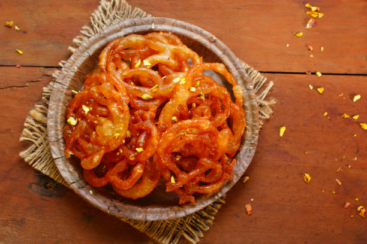

Pakistani Street food Festivals
Description of Street food:
The streets of Pakistan are alive with
vibrant flavors and aromas — street
food here is not just about eating, but a
celebration of rich culture and
tradition. In every city’s bustling lanes, you’ll find
the irresistible scent of tandoori spices, tangy chaats, and
sizzling kababs that capture the
heart and soul of Pakistani cuisine. Street food is
more than just taste; it brings people together, crossing languages and
social classes. This festival celebrates all the delicious delights that
make life more joyful — from hot and spicy gol gappas to juicy bun
kebabs and sweet, syrupy jalebis. At this festival, you’ll discover
signature dishes from different cities, the stories behind them, and the
fun and smiles that come with every bite.
-
Famous Food Street:
- Gol Gappay
- Bun Kabbab
- Chaat
- Nihari
- Jalebi
-
Food Terms And Definition:
-
Gol Gappa:

Gol Gappa (also known as Pani Puri or Puchka in different regions)
is a crispy,
hollow, round snack made from semolina or wheat
flour, filled with a mixture of spicy, tangy water, boiled potatoes,
chickpeas, and tamarind chutney. It is served fresh and eaten
in one bite to enjoy the burst of flavors
-
Bun Kabab:

Bun Kebab is a popular Pakistani street food made with a spicy patty
(usually beef, chicken, or lentils)
placed between soft burger-style buns, often layered with chutney,
sliced onions, tomatoes, and sometimes a fried egg.
It is pan-fried and served hot, known for its bold, desi flavors and
crispy texture.
-
Chaat:
Chaat is a popular South Asian street food made with a mix of
crispy, tangy, spicy, and sweet ingredients like
fried dough, boiled potatoes, chickpeas, yogurt, chutneys, and chaat
masala. It is known for
its bold flavors and mouthwatering combinations, offering a balance
of crunch, spice, and sourness in every bite.
-
Nihari:
Nihari is a slow-cooked stew made with tender beef or mutton shank
meat, simmered overnight with rich spices,
ginger, and garlic, often thickened with flour. It is traditionally
eaten as a hearty breakfast and served with naan or kulcha.
Originating from Mughal cuisine,
Nihari is now a beloved dish in Pakistani street food culture,
especially during winter.
-
Jalebi:

Jalebi is a sweet, crispy dessert made by deep-frying spirals of
fermented flour batter, which are then soaked in sugar syrup. It is
golden in color,
sticky, and juicy, with a crunchy texture on the outside and syrupy
softness inside.
Jalebi is a popular treat in Pakistani street food, especially
enjoyed hot during festivals and winter evenings.
-
Quote About Food:
-
One cannot think well, love well, sleep well, if one has not
doned well.
by Virginia Woolf
-
Food is the ingredient that builds us together.
This attribute is widely anonymous
-
The street food is the heart and soul of a city, a reflection
of its culture and diversity.
This quote is featured in compilation celebrating street food culture.
-
There is no sincerer love than the love of food.
by George Bernard
Shaw
-
Good food is a celebration of line.
by Sophia Loren
-
Old vs New Street Food Styles
- In the past street food was served on
used newspaper sheets, but now its offered in clean disposable plates with gloves.
- Earlier, food was left
uncovered for hours,while now it is kept covered with glass lids or in insulated boxes.
-
Water for gol gappa was kept in open buckets,whereas today, vendors prefer filterd or mineral water for better hygiene.
-
People believed that spicy food kills all germs,but now there is more focus oncleanliness and food safety.
-
Some thought that if a vendor sneeze near food, if adds flavour,but today masks and hygiene practices are expected.
Pakistani Culture Food
Biryani
Chapli Kabab
Haleem
Halwa pori

Pakistani Cultural Roti

Seekh Kabbab

Chicken Tikka
White Chicken Karahi